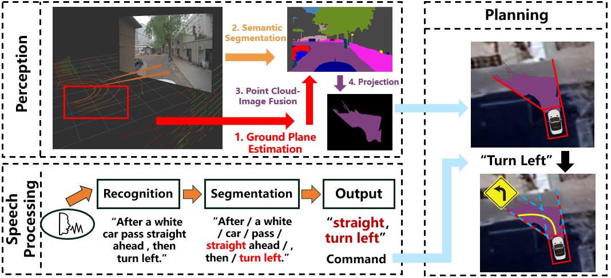

I am currently pursuing my Master's degree (Year 2) at the School of Automation, Beijing Institute of Technology,
under the supervision of Prof. Yi Yang.
Previously, I received my Bachelor’s degree from the Xu Teli School at Beijing Institute of Technology in 2024.
My research focuses on Embodied Intelligence and autonomous navigation, centered on architecting semantic world models and generative planning frameworks.
I aim to advance long-term autonomy by integrating high-level spatial reasoning into adaptive environment representations.
My objective is to establish generalized, environment-aware policies that enable robust task execution across complex and unstructured scenarios.
DIPP: A Diffusion-based Potential Planner for Synergistic Navigation and Mapping Yiqing Zhang,
Tao Wang,
Miaoxin Pan,
Yi Yang,
Mengyin Fu ICRA2026 Accepted
Responsible for developing a ROS-based multi-sensor fusion SLAM system by integrating LiDAR, GPS, IMU, and odometry data with EKF-based state estimation to achieve accurate and robust real-time vehicle localization.

Design and Implementation of Language Navigation for Autonomous Driving Based on Multi-Sensor Fusion Yiqing Zhang,
Rutong Peng *,
Tao Wang *,
Miaoxin Pan * 2023.07-2024.6
Responsible for the development of the entire voice navigation system, including overall system design, related algorithm development, real-world testing, and software design.
Designed a Latent-CoT enhanced world-action model for RoboTwin manipulation tasks by injecting key physical event prediction and semantic stage prediction as auxiliary supervision.
Built and trained on 12 RoboTwin tasks with 6000 trajectories, improving offline stage representation probing accuracy from 0.652 to 0.778; corrupted-stage ablation dropped to 0.638, validating the contribution of correct semantic supervision.
Awards
2020-2024: Outstanding Students, Beijing Institute of Technology
🏆 2022: “Challenge Cup” Capital University Students Academic and Technology Competition, Silver Award
🤖 2021: China College Students' 'Internet' Innovation and Entrepreneurship Competition, Silver Award
2020: Outstanding Students, LiaoNing Province
Experience
Beijing Institute of Technology, China
2024.09 - now
Master Student Research Advisor: Prof. Yi Yang
Beijing Institute of Technology, China
2020.09 - 2024.06
Undergraduate Student Research Advisor: Prof. Yi Yang
{kind=link}